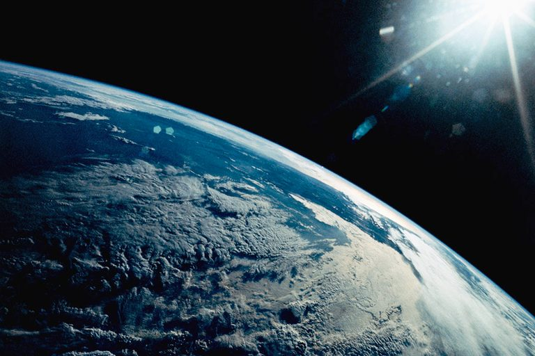
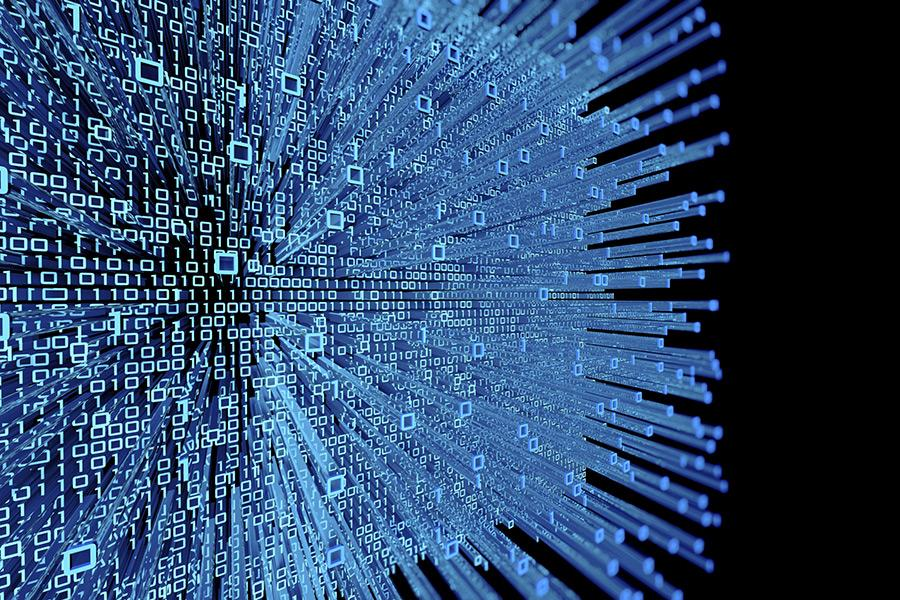

Hello, I am Pranav Vora, and as of spring of 2026, I am a sophomore at Canyon Crest Academy in the class of 2028. I am currently taking AP Chemistry, AP World History, and AP CSP. In the near future, I hope to be majoring in Electrical Engineering and/or Computer Science in college. I am pretty interested in science, specifically physics, and CS, and I hope to learn more about it next year and during this summer. I like to play video games, most notably Minecraft, and watch youtube videos and shows during my free time.
My parents are from India, and they came to the United States in the 1990s. My older brother was born in 2004 and today, he is in his fourth year at UCLA. I was born in June of 2010 which was six years after my brother. Almost all of my family likes STEM, an example of this is my father who works at Apple designing chips for devices. My family has been a crucial part of my life and has shaped me into who I ultimately became.
For the remainder of high school, I want to get more involved in stem-related activities such as the Science Olympiad and other clubs which I already am a part of. In the future, I plan to take classes including AP physics, AP Comp sci A, digital electronics and machine learning, hopefully. This summer, I want to do coding projects in my free time in order to improve my coding skills as well as build up my resume. As for colleges, I also really want to go to UCLA like my brother and major in engineering or computer science. I want to learn more about Artificial Intelligence and also hopefully have a job related to it in the future.
